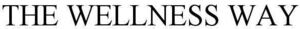

Trade Mark Journal No.2025/050 12 December 2025
WO0000001876412 (5,16,41,44)
Office of origin: United States of America
Date of International Registration:25 July 2025
Date of designation in the UK:
25 July 2025

Registration of this mark shall not give right to the exclusive use of the word "WELLNESS"
- Class 5
- Nutritional supplements.
- Class 16
- Printed training materials in the field of chiropractic services; printed training materials in the field of personal health and wellness.
- Class 41
- Chiropractic training services; training in the field of health and wellness for individuals, excluding athletic training; arranging and conducting of professional training workshops in the chiropractic field; arranging and conducting of personal health and wellness training workshops for individuals.
- Class 44
- Alternative medicine services, namely, detoxification services, chiropractic services, dietary and nutritional guidance; home health care services, namely, mechanical traction therapy; massage therapy services; medical services in the field of functional medicine; medical testing for diagnostic or treatment purposes in the field of thermography; providing weight loss program services; vitamin therapy; x-ray technician services and medical analysis services relating to the treatment of persons; wellness and health-related consulting services; providing online information in the field of chiropractic services; providing online information in the field of personal health and wellness.
The Wellness Way LLC
Representative: Sean D. Garrison Bacal & Garrison Law Group, 6991 East Camelback Road, Suite D-102, Scottsdale AZ 85251, UNITED STATES OF AMERICA